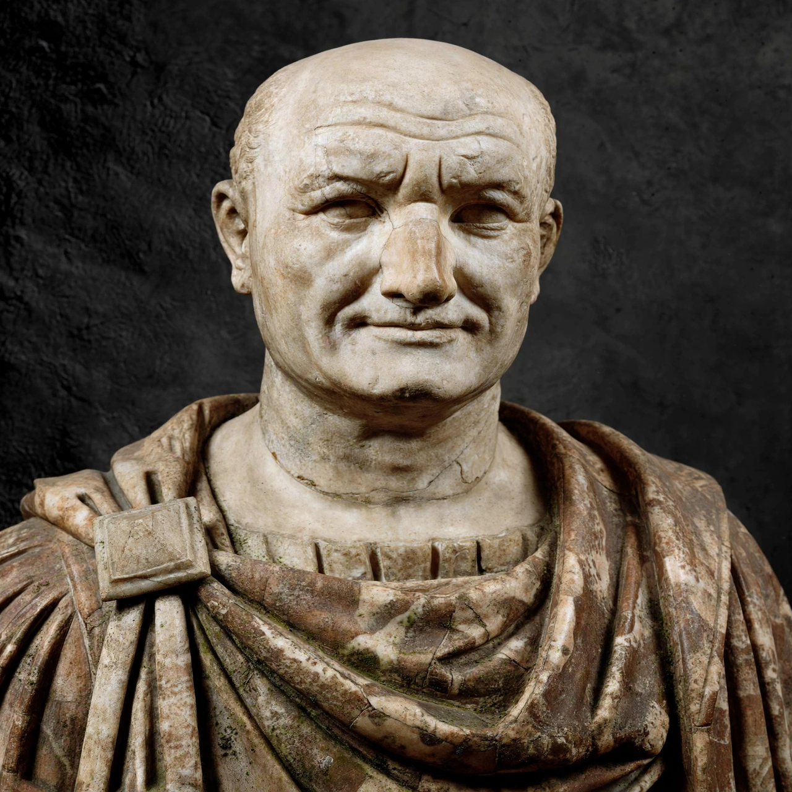

| Vespasian | |
|---|---|
 | |
| Reign | 1 July AD 69 – 23 June AD 79 |
| Predecessor | Vitellius |
| Successor | Titus |
| Born | 17 November AD 9, Falacrinae, Italy |
| Died | 23 June AD 79 (aged 69), Aquae Cutiliae |
| Dynasty | Flavian |
| Issue | Titus; Domitian; Domitilla the Younger |
Vespasian (17 November AD 9 – 23 June 79) was Roman emperor from 69 to 79. The last emperor to reign in the Year of the Four Emperors, he founded the Flavian dynasty, which ruled the Empire for 27 years. His fiscal reforms and consolidation of the empire generated political stability and a vast Roman building program. During his reign, the Colosseum was constructed in Rome.
Born into a family of equestrian rank at Falacrinae in the Sabine country, Vespasian rose through military commands: he served in Thrace, as quaestor in Crete and Cyrenaica, and distinguished himself in the invasion of Britain in AD 43, commanding the Second Legion. Under Nero he was appointed in AD 66 to conduct the war against the Jewish revolt in Judaea, where his son Titus served under him.
After Nero's suicide in 68, the empire was contested by Galba, Otho and Vitellius. In July 69 the legions of Egypt, Judaea and Syria acclaimed Vespasian emperor. His forces under Antonius Primus defeated Vitellius at the Second Battle of Bedriacum, and Vespasian entered Rome in 70. The Senate confirmed him with the lex de imperio Vespasiani.
Vespasian restored the finances ruined by Nero and civil war, imposing new taxes — including the famous tax on public urinals, which prompted his quip that money "does not smell" (pecunia non olet). Titus completed the siege of Jerusalem in 70. Vespasian rebuilt the Capitol, constructed the Temple of Peace and began the Flavian Amphitheatre. In Britain, campaigns under Agricola advanced the frontier. He was known for his wit, accessibility and relative tolerance of criticism.
Vespasian died of natural causes in June 79, reportedly joking, "Dear me, I think I am becoming a god." He was succeeded by Titus, the first Roman emperor directly succeeded by his own biological son.